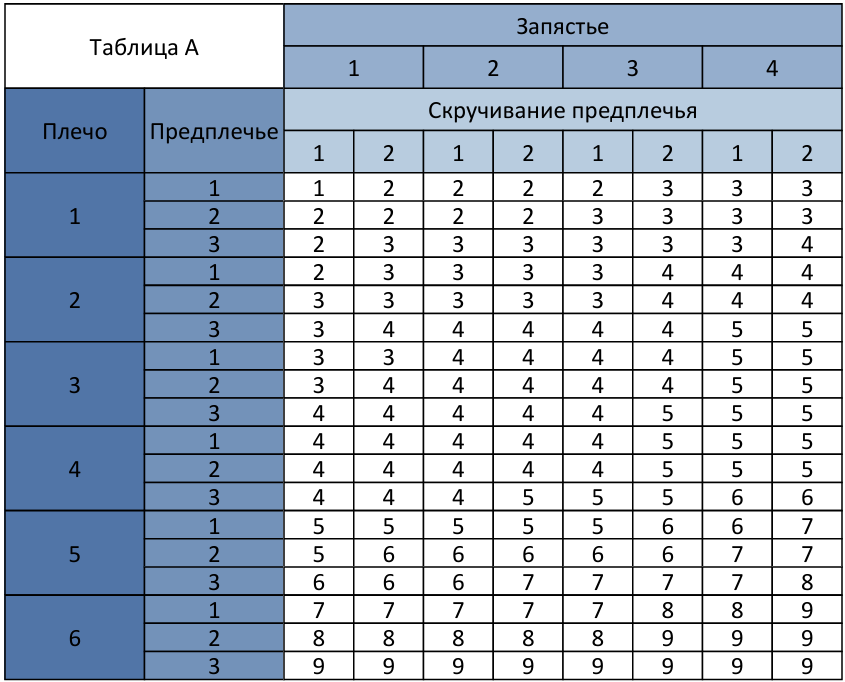
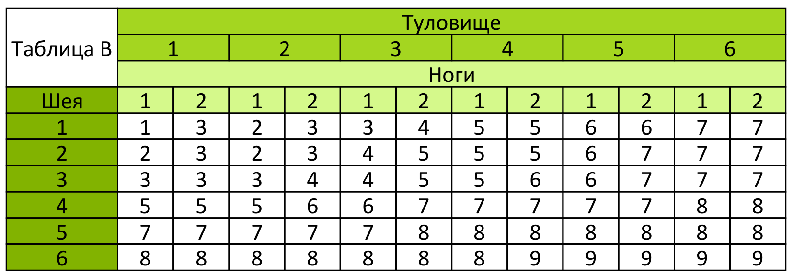
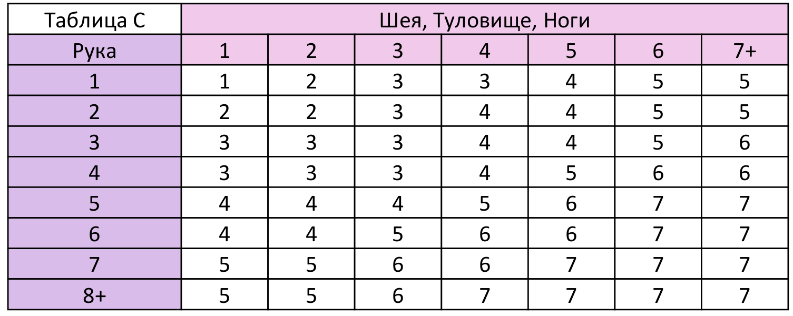

Как выставляется оценка RULA?
Левая рука, правая рука.
·Верхняя часть руки
oПодъем верхней части руки (если есть поддержка руки – минус 1 балл)
§-20 < α < 20 – 1 балл
§α < -20 – 2 балла
§20 < α < 45 – 2 балла
§45 < α < 90 – 3 балла
§90 < α – 4 балла
oОтведение верхней части руки
§Верхняя часть руки не отведена – 0 баллов
§Верхняя часть руки отведена – 1 балл
oПодъем плеча
§Плечо не поднято – 0 баллов
§Плечо поднято – 1 балл
·Предплечье
oСгибание предплечья
§60 < α < 100 – 1 балл
§α < 60 – 2 балла
§100 < α – 2 балла
oОриентация предплечья
§Предплечье параллельно туловищу – 0 баллов
§Предплечье работает поперек средней линии тела – 1 балл
§Предплечье работает в сторону от тела – 1 балл
·Запястье
oПодъем запястья
§-5 < α < 5 – 1 балл
§-15 < α < -5 – 2 балла
§5 < α < 15 – 2 балла
§15 < α – 3 балла
§α < -15 – 3 балла
oОтклонение запястья
§Запястье не отклонено – 0 баллов
§Запястье отклонено в ту или иную сторону – 1 балл
·Скручивание предплечья
oПоворот запястья
§Запястье скручено в основном в среднем диапазоне – 1 балл
§Запястье скручено полностью или скручено около конца диапазона скручивания – 2 балла
Шея, Туловище, Ноги
·Шея
oИзгиб шеи
§0 < α < 10 – 1 балл
§10 < α < 20 – 2 балла
§20 < α – 3 балла
§Шея разогнута α < 0 – 4 балла
oПоворот шеи
§Шея не повернута – 0 баллов
§Шея повернута – 1 балл
oИзгиб шеи в сторону
§Нет изгиба шеи в сторону – 0 баллов
§Есть изгиб шеи в сторону – 1 балл
·Туловище
oИзгиб туловища человек сидит
§Есть поддержка туловища – 1 балл
§Нет поддержки туловища α < -5 – 4 балла
§Нет поддержки туловища -5 < α < 20 – 2 балла
§Нет поддержки туловища 20 < α < 60 – 3 балла
§Нет поддержки туловища 60 < α – 4 балла
oИзгиб туловища человек не сидит
§α < -5 – 4 балла
§-5 < α < 5 – 1 балл
§5 < α < 20 – 2 балла
§20 < α < 60 – 3 балла
§60 < α – 4 балла
oПоворот туловища
§Нет поворота туловища – 0 баллов
§Есть поворот туловища – 1 балл
oИзгиб туловища в сторону
§Нет изгиба туловища в сторону – 0 баллов
§Есть изгиб туловища в сторону – 1 балл
·Ноги
oПоложение ног
§Ноги и ступни поддерживаются и сбалансированы – 1 балл
§Ноги и ступни не поддерживаются или не сбалансированы – 2 балла
- Для оценки положения руки существует таблица A, по которой выбирается балл (рис. 15). Для выставления дальнейшей оценки берется рука с наихудшей оценкой. Если поза сохраняется статической более 10 минут или если действие повторяется более 4 раз в минуту, то +1 балл. Если нетребовательная физическая работа – отсутствие статичности и повторяемости, то +0 баллов. Нагрузка менее 2 кг (периодически), то +0 баллов. Нагрузка от 2 кг до 10 кг (периодически), то +1 балл. Нагрузка от 2 кг до 10 кг (статическая поза или повторяемость), то + 2 балла. Нагрузка более 10 кг, то +3 балла.

Рисунок 15 – RULA Таблица А
- Для оценки положения шеи, туловища, ног существует таблица B, по которой выбирается балл (рис. 16). Если поза сохраняется статической более 10 минут или если действие повторяется более 4 раз в минуту, то +1 балл. Если нетребовательная физическая работа – отсутствие статичности и повторяемости, то +0 баллов. Нагрузка менее 2 кг (периодически), то +0 баллов. Нагрузка от 2 кг до 10 кг (периодически), то +1 балл. Нагрузка от 2 кг до 10 кг (статическая поза или повторяемость), то + 2 балла. Нагрузка более 10 кг, то +3 балла.

Рисунок 16 – RULA Таблица B
- Для получения финального результата метода RULA используется таблица C (рис. 17).

Рисунок 17 – RULA Таблица C